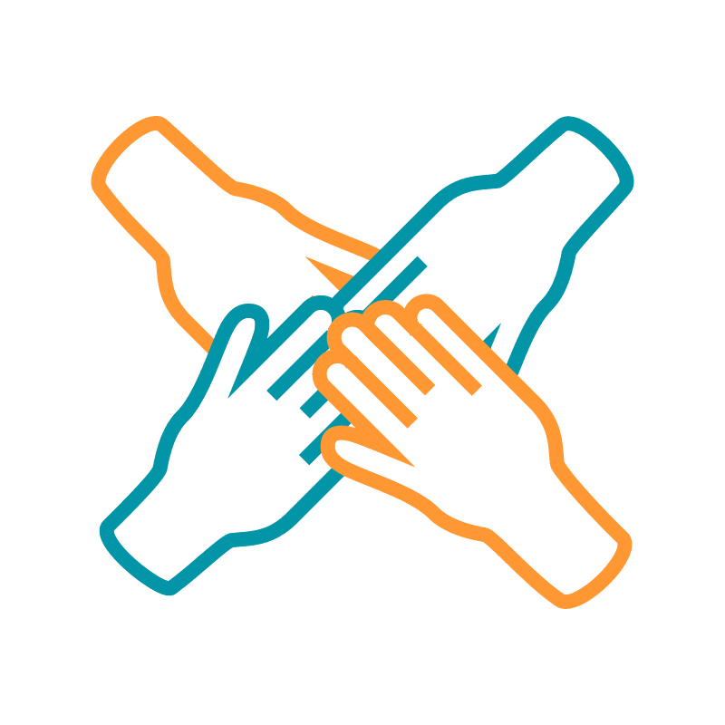

Ayudando a personas mayores a mejorar sus derechos y dignidad
Conoce cómo ayudamosSomos una organización sin fines de lucro dedicada a combatir la soledad y el aislamiento social de las personas mayores. Creemos que todos merecen tener compañía y sentirse queridos, independientemente de su edad. Nuestro equipo está compuesto por voluntarios comprometidos que ofrecen amistad y apoyo a las personas mayores en sus hogares, centros de día y comunidades.
Ofrecemos una variedad de servicios para ayudar a las personas mayores a combatir la soledad y el aislamiento social. Algunos de nuestros programas incluyen:
Nuestros voluntarios visitan regularmente a personas mayores en sus hogares para brindar compañía y apoyo.
Acompañamos a personas mayores a eventos sociales, actividades culturales y excursiones.
Nuestros voluntarios realizan llamadas telefónicas regulares a personas mayores para mantenerlas conectadas y brindarles compañía.
Facilitamos grupos de apoyo para personas mayores que enfrentan desafíos similares, como la pérdida de un ser querido o la soledad.
Organizamos talleres y actividades recreativas para promover la interacción social y el bienestar de las personas mayores.
Tus donaciones son esenciales para que podamos continuar brindando nuestros servicios a las personas mayores en necesidad. Puedes hacer una donación en línea o por transferencia bancaria.
Donar Ahora Twitter
Twitter Twitter
Twitter